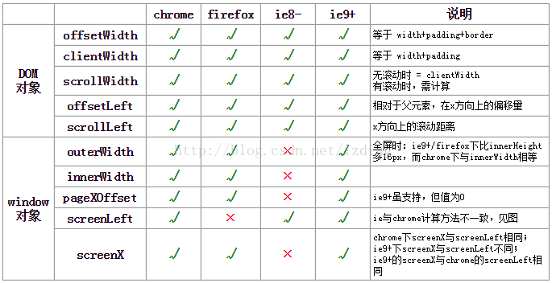
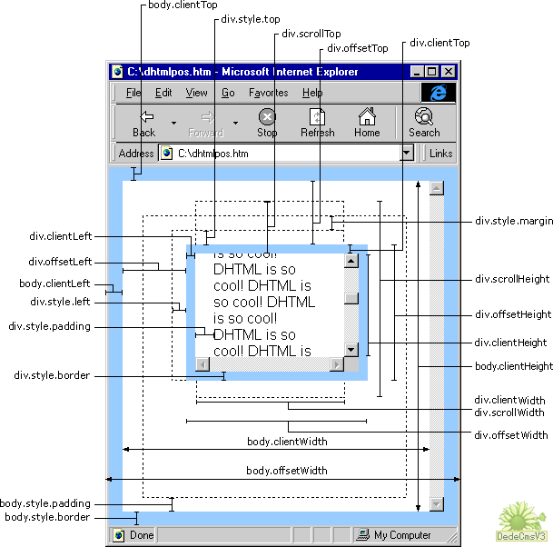
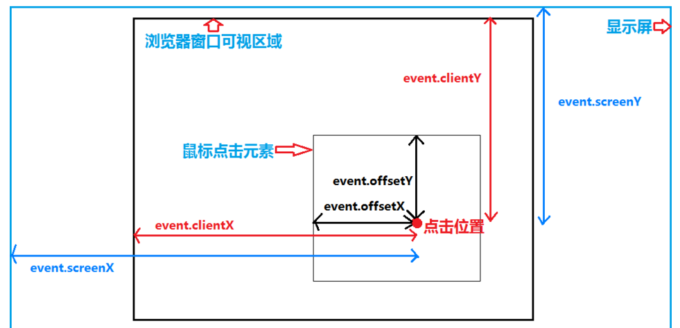

<!DOCTYPE HTML>
<html lang="zh-CN">
<head><meta name="generator" content="Hexo 3.8.0">
    <!--Setting-->
    <meta charset="UTF-8">
    <meta name="viewport" content="width=device-width, user-scalable=no, initial-scale=1.0, maximum-scale=1.0, minimum-scale=1.0">
    <meta http-equiv="X-UA-Compatible" content="IE=Edge,chrome=1">
    <meta http-equiv="Cache-Control" content="no-siteapp">
    <meta http-equiv="Cache-Control" content="no-transform">
    <meta name="renderer" content="webkit|ie-comp|ie-stand">
    <meta name="apple-mobile-web-app-capable" content="王永杰的网络日志">
    <meta name="apple-mobile-web-app-status-bar-style" content="black">
    <meta name="format-detection" content="telephone=no,email=no,adress=no">
    <meta name="browsermode" content="application">
    <meta name="screen-orientation" content="portrait">
    <!-- 自定义视频托管 -->
    <script src="https://player.polyv.net/script/polyvplayer.min.js"></script>
    <link rel="dns-prefetch" href="http://wangyongjie.top">
    <!--SEO-->

    <meta name="keywords" content="JavaScript">


    <meta name="description" content="一、原生javascript1. 获取元素节点的高度和宽度12345678910111213141516171819202122232425261. offsetWidth  // 获取元素节点...">


<meta name="robots" content="all">
<meta name="google" content="all">
<meta name="googlebot" content="all">
<meta name="verify" content="all">

    <!--Title-->


<title>元素宽高及浏览器视口参数 | 王永杰的网络日志</title>


    <link rel="alternate" href="/atom.xml" title="王永杰的网络日志" type="application/atom+xml">


    <link rel="icon" href="/favicon.ico">

    


<link rel="stylesheet" href="/css/bootstrap.min.css?rev=3.3.7">
<link rel="stylesheet" href="/css/font-awesome.min.css?rev=4.5.0">
<link rel="stylesheet" href="/css/style.css?rev=@@hash">


    


    <script>
        var _hmt = _hmt || [];
        (function() {
            var hm = document.createElement("script");
            hm.src = "https://hm.baidu.com/hm.js?f42ffe5fed856accbf91820f137dab46";
            var s = document.getElementsByTagName("script")[0];
            s.parentNode.insertBefore(hm, s);
        })();
    </script>


    

</head>

</html>
<!--[if lte IE 8]>
<style>
    html{ font-size: 1em }
</style>
<![endif]-->
<!--[if lte IE 9]>
<div style="ie">你使用的浏览器版本过低，为了你更好的阅读体验，请更新浏览器的版本或者使用其他现代浏览器，比如Chrome、Firefox、Safari等。</div>
<![endif]-->

<body>
    <header class="main-header" style="background-image:url(http://snippet.shenliyang.com/img/banner.jpg)">
    <div class="main-header-box">
        <a class="header-avatar" href="/" title="wangyongjie">
            
        </a>
        <div class="branding">
        	<!--<h2 class="text-hide">Snippet主题,从未如此简单有趣</h2>-->
            
                <h2> 我是谁 我在哪 我在做什么 </h2>
            
    	</div>
    </div>
</header>
    <nav class="main-navigation">
    <div class="container">
        <div class="row">
            <div class="col-sm-12">
                <div class="navbar-header"><span class="nav-toggle-button collapsed pull-right" data-toggle="collapse" data-target="#main-menu" id="mnav">
                    <span class="sr-only"></span>
                        <i class="fa fa-bars"></i>
                    </span>
                    <a class="navbar-brand" href="http://wangyongjie.top">王永杰的网络日志</a>
                </div>
                <div class="collapse navbar-collapse" id="main-menu">
                    <ul class="menu">
                        
                            <li role="presentation" class="text-center">
                                <a href="/"><i class="fa "></i>首页</a>
                            </li>
                        
                            <li role="presentation" class="text-center">
                                <a href="/categories/前端/"><i class="fa "></i>前端</a>
                            </li>
                        
                            <li role="presentation" class="text-center">
                                <a href="/categories/后端/"><i class="fa "></i>后端</a>
                            </li>
                        
                            <li role="presentation" class="text-center">
                                <a href="/categories/工具/"><i class="fa "></i>工具</a>
                            </li>
                        
                            <li role="presentation" class="text-center">
                                <a href="/webnav/"><i class="fa "></i>导航</a>
                            </li>
                        
                            <li role="presentation" class="text-center">
                                <a href="/archives/"><i class="fa "></i>时间轴</a>
                            </li>
                        
                            <li role="presentation" class="text-center">
                                <a href="/message/"><i class="fa "></i>留言板</a>
                            </li>
                        
                            <li role="presentation" class="text-center">
                                <a href="/about/"><i class="fa "></i>关于</a>
                            </li>
                        
                    </ul>
                </div>
            </div>
        </div>
    </div>
</nav>
    <section class="content-wrap">
        <div class="container">
            <div class="row">
                <main class="col-md-8 main-content m-post">
                    <p id="process"></p>
<article class="post">
    <div class="post-head">
        <h1 id="元素宽高及浏览器视口参数">
            
	            元素宽高及浏览器视口参数
            
        </h1>
        <div class="post-meta">
    
        <span class="categories-meta fa-wrap">
            <i class="fa fa-folder-open-o"></i>
            <a class="category-link" href="/categories/前端/">前端</a>
        </span>
    

    
        <span class="fa-wrap">
            <i class="fa fa-tags"></i>
            <span class="tags-meta">
                
                    <a class="tag-link" href="/tags/JavaScript/">JavaScript</a>
                
            </span>
        </span>
    

    
        
        <span class="fa-wrap">
            <i class="fa fa-clock-o"></i>
            <span class="date-meta">2018/02/20</span>
        </span>
        
    
</div>
            
            
            <p class="fa fa-exclamation-triangle warning">
                本文于<strong>417</strong>天之前发表，文中内容可能已经过时。
            </p>
        
    </div>
    
    <div class="post-body post-content">
        <h2 id="一、原生javascript"><a href="#一、原生javascript" class="headerlink" title="一、原生javascript"></a>一、原生javascript</h2><h3 id="1-获取元素节点的高度和宽度"><a href="#1-获取元素节点的高度和宽度" class="headerlink" title="1. 获取元素节点的高度和宽度"></a>1. 获取元素节点的高度和宽度</h3><p><br><figure class="highlight javascript"><table><tr><td class="gutter"><pre><span class="line">1</span><br><span class="line">2</span><br><span class="line">3</span><br><span class="line">4</span><br><span class="line">5</span><br><span class="line">6</span><br><span class="line">7</span><br><span class="line">8</span><br><span class="line">9</span><br><span class="line">10</span><br><span class="line">11</span><br><span class="line">12</span><br><span class="line">13</span><br><span class="line">14</span><br><span class="line">15</span><br><span class="line">16</span><br><span class="line">17</span><br><span class="line">18</span><br><span class="line">19</span><br><span class="line">20</span><br><span class="line">21</span><br><span class="line">22</span><br><span class="line">23</span><br><span class="line">24</span><br><span class="line">25</span><br><span class="line">26</span><br></pre></td><td class="code"><pre><span class="line"><span class="number">1.</span> offsetWidth  </span><br><span class="line"><span class="comment">// 获取元素节点宽度  包括元素宽度如果有滚动条包含滚动条所占的位置</span></span><br><span class="line"><span class="comment">//（包括元素宽度、内边距和边框，不包括外边距）</span></span><br><span class="line"><span class="number">2.</span> clientWidth   </span><br><span class="line"><span class="comment">// 获取元素节点的宽度 不包含滚动条所占的位置</span></span><br><span class="line"><span class="comment">//（包括元素宽度、内边距，不包括边框和外边距）</span></span><br><span class="line"><span class="number">3.</span> scrollWidth   </span><br><span class="line"><span class="comment">// 获取元素节点的宽度 如果子集比他宽且设置为滚动则包含子集滚动卷入部分否则与offsetWidth相同</span></span><br><span class="line"><span class="comment">//（包括元素宽度、内边距和溢出尺寸，不包括边框和外边距），无溢出的情况，与clientWidth相同</span></span><br><span class="line">--------------------</span><br><span class="line"><span class="number">4.</span> offsetHeight  </span><br><span class="line"><span class="comment">// 获取元素节点高度度  包括元素宽度如果有滚动条包含滚动条所占的位置（实际元素高度）</span></span><br><span class="line"><span class="comment">//（包括元素高度、内边距和边框，不包括外边距）</span></span><br><span class="line"><span class="number">5.</span> clientHeight  </span><br><span class="line"><span class="comment">// 获取元素节点的高度 不包含滚动条所占的位置</span></span><br><span class="line"><span class="comment">//（包括元素高度、内边距，不包括边框和外边距）</span></span><br><span class="line"><span class="number">6.</span> scrollHeight  </span><br><span class="line"><span class="comment">// 获取元素节点的高度 如果子集比他高且设置为滚动则包含子集滚动卷入部分否则与offsetHeight相同</span></span><br><span class="line"><span class="comment">//（包括元素高度、内边距和溢出尺寸，不包括边框和外边距），无溢出的情况，与clientHeight相同</span></span><br><span class="line"></span><br><span class="line"></span><br><span class="line">附加：</span><br><span class="line"><span class="number">7.</span> style.width         </span><br><span class="line"><span class="comment">//返回元素的宽度（包括元素宽度，不包括内边距、边框和外边距）</span></span><br><span class="line"><span class="number">8.</span> style.height</span><br><span class="line"><span class="comment">//返回元素的高度（包括元素高度，不包括内边距、边框和外边距）</span></span><br></pre></td></tr></table></figure></p>
<p></p><p id="danger"></p>
<blockquote>
<ol>
<li><code>style.width</code> 返回的是字符串，如28px，<code>offsetWidth</code>返回的是数值28；</li>
<li><code>style.width</code>/<code>style.height</code>与<code>scrollWidth</code>/<code>scrollHeight</code>是可读写的属性，<code>clientWidth</code>/<code>clientHeight</code>与<code>offsetWidth</code>/<code>offsetHeight</code>是只读属性</li>
<li><code>style.width</code>的值需要事先定义，否则取到的值为空。而且必须要定义在html里(内联样式)，如果定义在css里，<code>style.height</code>的值仍然为空，但元素偏移有效；而<code>offsetWidth</code>则仍能取到。</li>
</ol>
</blockquote>
<p><strong>附</strong>：<a href="http://wangyongjie.top/demo/book/获取元素节点的高度和宽度">获取元素节点的高度和宽度测试demo</a></p>
<h3 id="2-获取元素到顶部和左部的距离-及卷入的距离"><a href="#2-获取元素到顶部和左部的距离-及卷入的距离" class="headerlink" title="2. 获取元素到顶部和左部的距离(及卷入的距离)"></a>2. 获取元素到顶部和左部的距离(及卷入的距离)</h3><p><br><figure class="highlight javascript"><table><tr><td class="gutter"><pre><span class="line">1</span><br><span class="line">2</span><br><span class="line">3</span><br><span class="line">4</span><br><span class="line">5</span><br><span class="line">6</span><br><span class="line">7</span><br><span class="line">8</span><br><span class="line">9</span><br><span class="line">10</span><br><span class="line">11</span><br><span class="line">12</span><br></pre></td><td class="code"><pre><span class="line"><span class="number">1.</span> offsetLeft </span><br><span class="line"><span class="comment">//获取元素左边线到浏览器可视部分的左部距离</span></span><br><span class="line"><span class="comment">//此属性和offsetTop的原理是一样的，只不过方位不同，这里就不多介绍了。</span></span><br><span class="line"><span class="number">2.</span> offsetTop </span><br><span class="line"><span class="comment">//获取元素顶边线到浏览器可视部分的顶部距离</span></span><br><span class="line"><span class="comment">//返回元素的上外缘距离最近采用定位父元素内壁的距离，如果父元素中没有采用定位的，则是获取上外边缘距离文档内壁的距离。</span></span><br><span class="line"><span class="number">3.</span> scrollLeft </span><br><span class="line"><span class="comment">//设置和获取元素左部卷入的距离 ，设置直接赋值即可</span></span><br><span class="line"><span class="comment">//此属性可以获取或者设置对象的最左边到对象在当前窗口显示的范围内的左边的距离，也就是元素被滚动条向左拉动的距离。</span></span><br><span class="line"><span class="number">4.</span> scrollTop </span><br><span class="line"><span class="comment">//设置和获取元素顶部卷入的距离，设置直接赋值即可</span></span><br><span class="line"><span class="comment">//此属性可以获取或者设置对象的最顶部到对象在当前窗口显示的范围内的顶边的距离，也就是元素滚动条被向下拉动的距离。</span></span><br></pre></td></tr></table></figure></p>
<p></p><p id="danger"></p>
<blockquote>
<ol>
<li>offsetTop  所谓的定位就是position属性值为relative、absolute或者fixed。返回值是一个整数，单位是像素。此属性是只读的。</li>
<li>offsetLeft 此属性和offsetTop的原理是一样的，只不过方位不同，这里就不多介绍了。</li>
<li>scrollLeft 返回值是一个整数，单位是像素。此属性是可读写的。</li>
<li>scrollTop  返回值是一个整数，单位是像素。此属性是可读写的。</li>
</ol>
</blockquote>
<p><strong>附</strong>：<a href="http://wangyongjie.top/demo/book/获取元素到顶部和左部的距离">获取元素到顶部和左部的距离测试demo</a></p>
<h3 id="3-元素相对于浏览器的坐标"><a href="#3-元素相对于浏览器的坐标" class="headerlink" title="3. 元素相对于浏览器的坐标"></a>3. 元素相对于浏览器的坐标</h3><p><br><figure class="highlight javascript"><table><tr><td class="gutter"><pre><span class="line">1</span><br><span class="line">2</span><br><span class="line">3</span><br><span class="line">4</span><br><span class="line">5</span><br><span class="line">6</span><br><span class="line">7</span><br><span class="line">8</span><br><span class="line">9</span><br><span class="line">10</span><br><span class="line">11</span><br><span class="line">12</span><br><span class="line">13</span><br><span class="line">14</span><br><span class="line">15</span><br><span class="line">16</span><br></pre></td><td class="code"><pre><span class="line"><span class="number">1.</span> clientX</span><br><span class="line"><span class="comment">//鼠标x有效区域）左上角x轴的坐标；  不随滚动条滚动而改变；</span></span><br><span class="line"><span class="number">2.</span> clientY</span><br><span class="line"><span class="comment">//鼠标相对于浏览器（这里说的是浏览器的有效区域）左上角y轴的坐标；  不随滚动条滚动而改变；</span></span><br><span class="line"><span class="number">3.</span> pageX</span><br><span class="line"><span class="comment">//鼠标相对于浏览器（这里说的是浏览器的有效区域）左上角x轴的坐标；  随滚动条滚动而改变；</span></span><br><span class="line"><span class="number">4.</span> pageY</span><br><span class="line"><span class="comment">//鼠标相对于浏览器（这里说的是浏览器的有效区域）左上角y轴的坐标；  随滚动条滚动而改变；</span></span><br><span class="line"><span class="number">5.</span> screenX</span><br><span class="line"><span class="comment">//鼠标相对于显示器屏幕左上角x轴的坐标；  </span></span><br><span class="line"><span class="number">6.</span> screenY</span><br><span class="line"><span class="comment">//鼠标相对于显示器屏幕左上角y轴的坐标；  </span></span><br><span class="line"><span class="number">7.</span> offsetX</span><br><span class="line"><span class="comment">//鼠标相对于事件源左上角X轴的坐标</span></span><br><span class="line"><span class="number">8.</span> offsetY</span><br><span class="line"><span class="comment">//鼠标相对于事件源左上角Y轴的坐标</span></span><br></pre></td></tr></table></figure></p>
<p><strong>附</strong>：<a href="http://wangyongjie.top/demo/book/元素相对于浏览器的坐标">元素相对于浏览器的坐标测试demo</a></p>
<h3 id="4-event-？"><a href="#4-event-？" class="headerlink" title="4. event ？"></a>4. event ？</h3><blockquote>
<p>参考文章 <a href="https://www.cnblogs.com/pengfei-nie/p/7076489.html" target="_blank" rel="noopener">event</a> 详解</p>
</blockquote>
<p><strong>要注意只有在事件发生的过程中， event对象才生效。</strong></p>
<hr>
<h2 id="二、jQuery"><a href="#二、jQuery" class="headerlink" title="二、jQuery"></a>二、jQuery</h2><h3 id="1-获取和设置元素宽高"><a href="#1-获取和设置元素宽高" class="headerlink" title="1. 获取和设置元素宽高"></a>1. 获取和设置元素宽高</h3><figure class="highlight javascript"><table><tr><td class="gutter"><pre><span class="line">1</span><br><span class="line">2</span><br><span class="line">3</span><br><span class="line">4</span><br></pre></td><td class="code"><pre><span class="line"><span class="number">1.</span> $(<span class="string">'#id).width();  </span></span><br><span class="line"><span class="string">//获取元素宽度; ()可以传入参数，当传入参数时为设置，参数不用带单位默认为PX</span></span><br><span class="line">2. $('#id).heigth(); </span><br><span class="line"><span class="comment">//获取元素高度; ()可以传入参数，当传入参数时为设置，参数不用带单位默认为PX</span></span><br></pre></td></tr></table></figure>
<p><strong>附</strong>：<a href="http://wangyongjie.top/demo/book/jQuery获取和设置元素宽高">jQuery获取和设置元素宽高测试demo</a></p>
<h3 id="2-获取元素到顶部和左部的距离"><a href="#2-获取元素到顶部和左部的距离" class="headerlink" title="2. 获取元素到顶部和左部的距离"></a>2. 获取元素到顶部和左部的距离</h3><figure class="highlight javascript"><table><tr><td class="gutter"><pre><span class="line">1</span><br><span class="line">2</span><br><span class="line">3</span><br><span class="line">4</span><br><span class="line">5</span><br><span class="line">6</span><br></pre></td><td class="code"><pre><span class="line"><span class="number">1.</span> $(<span class="string">'#id'</span>).offset(); </span><br><span class="line"><span class="comment">//获取元素到顶部和左部的距离，返回的为一个包含【top和left】数组，分别为到顶部和左部的距离</span></span><br><span class="line"><span class="number">2.</span> $(<span class="string">'#id'</span>).offset().top </span><br><span class="line"><span class="comment">//获取元素到顶部的距离</span></span><br><span class="line"><span class="number">3.</span> $(<span class="string">'#id'</span>).offset().left </span><br><span class="line"><span class="comment">//获取元素到左部的距离</span></span><br></pre></td></tr></table></figure>
<p><strong>附</strong>：<a href="http://wangyongjie.top/demo/book/jQuery获取元素到顶部和左部的距离">jQuery获取元素到顶部和左部的距离测试demo</a></p>
<h3 id="3-获取和设置元素左部和顶部卷入的距离"><a href="#3-获取和设置元素左部和顶部卷入的距离" class="headerlink" title="3. 获取和设置元素左部和顶部卷入的距离"></a>3. 获取和设置元素左部和顶部卷入的距离</h3><figure class="highlight javascript"><table><tr><td class="gutter"><pre><span class="line">1</span><br><span class="line">2</span><br><span class="line">3</span><br><span class="line">4</span><br></pre></td><td class="code"><pre><span class="line"><span class="number">1.</span> $(<span class="string">'#id'</span>).scrollLeft() </span><br><span class="line"><span class="comment">//获取元素左侧卷入宽度; ()可以传入参数，传入参数时为设置卷入，参数不用带单位默认为PX</span></span><br><span class="line"><span class="number">2.</span> $(<span class="string">'#id'</span>).scrollTop() </span><br><span class="line"><span class="comment">//获取元素顶部卷入宽度; ()可以传入参数，传入参数时为设置卷入，参数不用带单位默认为PX</span></span><br></pre></td></tr></table></figure>
<p><strong>附</strong>：<a href="http://wangyongjie.top/demo/book/jQuery获取和设置元素左部和顶部卷入的距离">jQuery获取和设置元素左部和顶部卷入的距离测试demo</a></p>
<h2 id="参考资料："><a href="#参考资料：" class="headerlink" title="参考资料："></a>参考资料：</h2><ol>
<li><a href="https://blog.csdn.net/xiaoxiaoshuai__/article/details/78033514" target="_blank" rel="noopener">javascript和Jq获取和设置页面元素到顶部、左部距离、宽高元素卷入部分（scroll、scrollTop、scrollLeft、offset、offsetTop、offsetLeft）</a></li>
<li><a href="https://www.cnblogs.com/wangyihong/p/8056859.html" target="_blank" rel="noopener">js获取元素的滚动高度，和距离顶部的高度</a></li>
<li><a href="https://blog.csdn.net/qq_31915745/article/details/75014234" target="_blank" rel="noopener">JS/Jquery实现导航栏顶部吸顶效果（二）</a></li>
<li><a href="http://www.jq22.com/chm/jquery/" target="_blank" rel="noopener">jquery在线手册|jQuery API中文手册</a></li>
<li><a href="https://www.cnblogs.com/mycognos/p/9131180.html" target="_blank" rel="noopener">JS中的offsetWidth、offsetHeight、clientWidth、clientHeight等等的详细介绍</a></li>
<li><a href="https://blog.csdn.net/lzding/article/details/46371609" target="_blank" rel="noopener">图解offsetWidth, clientWidth, scrollWidth, innerWidth, outerWidth, pageXOffset等</a></li>
<li><a href="http://wangyongjie.top/2018/03/24/025-JS%E4%B8%AD%E5%85%B3%E4%BA%8EclientWidth%20offsetWidth%20scrollWidth%20%E7%AD%89%E7%9A%84%E5%90%AB%E4%B9%89/">JS中关于clientWidth offsetWidth scrollWidth 等的含义</a></li>
<li><a href="https://www.cnblogs.com/deerfig/p/6432683.html" target="_blank" rel="noopener">理解 e.clientX,e.clientY e.pageX e.pageY e.offsetX e.offsetY</a></li>
<li><a href="https://blog.csdn.net/weixin_41342585/article/details/80659736" target="_blank" rel="noopener">鼠标事件以及clientX、offsetX、screenX、pageX、x的区别</a></li>
<li><a href="https://jingyan.baidu.com/article/d8072ac4612004ec94cefd47.html" target="_blank" rel="noopener">如何用js实现跟随鼠标显示当前鼠标坐标</a></li>
<li><a href="http://www.w3school.com.cn/jsref/dom_obj_event.asp" target="_blank" rel="noopener">HTML DOM Event 对象</a></li>
<li><a href="https://www.cnblogs.com/pengfei-nie/p/7076489.html" target="_blank" rel="noopener">JS的 event 对象属性、使用实例、兼容性处理(极大提高代码效率、减少代码量)</a></li>
</ol>
<p><br><strong>本文作者</strong>：王永杰<br><strong>本文地址</strong>： <a href="http://wangyongjie.top/blog/17102/">http://wangyongjie.top/blog/17102/</a> <br><strong>版权声明</strong>：本博客所有文章除特别声明外，均采用 <a href="http://creativecommons.org/licenses/by-nc-sa/3.0/cn/" target="_blank" rel="noopener">CC BY-NC-SA 3.0 CN</a> 许可协议。转载请注明出处！</p>

    </div>
    
        <div class="reward" ontouchstart>
    <div class="reward-wrap">赏
        <div class="reward-box">
            
                <span class="reward-type">
                    <b>支付宝打赏</b>
                </span>
            
            
                <span class="reward-type">
                    <b>微信打赏</b>
                </span>
            
        </div>
    </div>
    <p class="reward-tip">一分也是爱</p>
</div>


    
    <div class="post-footer">
        <div>
            
                转载声明：商业转载请联系作者获得授权,非商业转载请注明出处 <a href="http://wangyongjie.top" target="_blank"> http://wangyongjie.top</a>
            
        </div>
        <div>
            
        </div>
    </div>
</article>

<div class="article-nav prev-next-wrap clearfix">
    
        <a href="/blog/33672/" class="pre-post btn btn-default" title="如何优雅的选择字体">
            <i class="fa fa-angle-left fa-fw"></i><span class="hidden-lg">上一篇</span>
            <span class="hidden-xs">如何优雅的选择字体</span>
        </a>
    
    
        <a href="/blog/12266/" class="next-post btn btn-default" title="Bootstrap 媒体查询">
            <span class="hidden-lg">下一篇</span>
            <span class="hidden-xs">Bootstrap 媒体查询</span><i class="fa fa-angle-right fa-fw"></i>
        </a>
    
</div>


    <div id="comments">
        
	
<div id="lv-container" data-id="city" data-uid="MTAyMC8zNDc5OS8xMTMzNg==">
  <script type="text/javascript">
     (function(d, s) {
         var j, e = d.getElementsByTagName(s)[0];
         if (typeof LivereTower === 'function') { return; }
         j = d.createElement(s);
         j.src = 'https://cdn-city.livere.com/js/embed.dist.js';
         j.async = true;
         e.parentNode.insertBefore(j, e);
     })(document, 'script');
  </script>
</div>


    </div>


                </main>
                
                    <aside id="article-toc" role="navigation" class="col-md-4">
    <div class="widget">
        <h3 class="title">文章目录</h3>
        
            <ol class="toc"><li class="toc-item toc-level-2"><a class="toc-link" href="#一、原生javascript"><span class="toc-text">一、原生javascript</span></a><ol class="toc-child"><li class="toc-item toc-level-3"><a class="toc-link" href="#1-获取元素节点的高度和宽度"><span class="toc-text">1. 获取元素节点的高度和宽度</span></a></li><li class="toc-item toc-level-3"><a class="toc-link" href="#2-获取元素到顶部和左部的距离-及卷入的距离"><span class="toc-text">2. 获取元素到顶部和左部的距离(及卷入的距离)</span></a></li><li class="toc-item toc-level-3"><a class="toc-link" href="#3-元素相对于浏览器的坐标"><span class="toc-text">3. 元素相对于浏览器的坐标</span></a></li><li class="toc-item toc-level-3"><a class="toc-link" href="#4-event-？"><span class="toc-text">4. event ？</span></a></li></ol></li><li class="toc-item toc-level-2"><a class="toc-link" href="#二、jQuery"><span class="toc-text">二、jQuery</span></a><ol class="toc-child"><li class="toc-item toc-level-3"><a class="toc-link" href="#1-获取和设置元素宽高"><span class="toc-text">1. 获取和设置元素宽高</span></a></li><li class="toc-item toc-level-3"><a class="toc-link" href="#2-获取元素到顶部和左部的距离"><span class="toc-text">2. 获取元素到顶部和左部的距离</span></a></li><li class="toc-item toc-level-3"><a class="toc-link" href="#3-获取和设置元素左部和顶部卷入的距离"><span class="toc-text">3. 获取和设置元素左部和顶部卷入的距离</span></a></li></ol></li><li class="toc-item toc-level-2"><a class="toc-link" href="#参考资料："><span class="toc-text">参考资料：</span></a></li></ol>
        
    </div>
</aside>

                
            </div>
        </div>
    </section>
    <footer class="main-footer">
    <div class="container">
        <div class="row">
        </div>
    </div>
</footer>

<a id="back-to-top" class="icon-btn hide">
	<i class="fa fa-chevron-up"></i>
</a>


    <div class="copyright">
    <div class="container">
        <div class="row">
            <div class="col-sm-12">
                <div class="busuanzi">
    
</div>

            </div>
            <div class="col-sm-12">
                <span>Copyright &copy; 2019
                </span> |
                <span>
                    Powered by <a href="//hexo.io" class="copyright-links" target="_blank" rel="nofollow">Hexo</a>
                </span> |
                <span>
                    Theme by <a href="//github.com/shenliyang/hexo-theme-snippet.git" class="copyright-links" target="_blank" rel="nofollow">Snippet</a>
                </span>
            </div>
        </div>
    </div>
</div>


<script src="/js/app.js?rev=@@hash"></script>

</body>
</html>